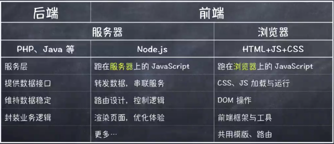

前后端分离
- 单体应用
严重依赖后端
前端无法单独调试，开发效率低
前端不可避免遇到后台代码
后端本身会引发一些问题，如同步加载问题，如果是JSP第一次运行缓慢等
- 半分离
SPA是典型的前后端分离
在业务复杂的情况下，页面的渲染部分的代码非常负载，冗余严重
在Json返回的数据量较大的情况下，渲染缓慢
由于搜索引擎的爬虫无法爬下JS异步渲染的数据，SEO会存在一定的问题
业务时，一个页面可能要发起多次HTTP请求才能将页面渲染完毕，资源消耗严重
- 彻底分离
前端：负责View和Controller层
后端：只负责Model层、业务/数据处理等。
优点：
适配性提升
响应速度提升
性能得到提升
异步与模板统一
前后端分离后的职责划分

传统应用的单端调用与多端调用
- 单端调用
传统的应用内提供的接口是有业务针对性的
重构困难
高耦合度
- 多端调用
接口同时提供给web、移动端使用
移动端仅用来采集数据以及数据的展示
而web端大多数场景用来管理数据
不同断电的业务有所不同
每个端的接口复用度不会太高
BFF初探
BFF即Backend For Frontend(服务于前端的后盾)，也就是服务器设计API时会考虑前端的使用，并在服务端直接进行业务逻辑的处理，又称为用户体验适配器，BFF只是一张逻辑分层，而非一种技术，虽然BFF是一个新名词，但它的理念由来已久。
概念上，把每个前端应用拆分两部分：客户端应用与服务端部分（BFF）。其中，BFF是面向特定用户体验的，由实现这部分UI的前端团队负责实现及维护。（即UI与对应的BFF由同一个团队负责）
从服务的角度看，BFF实际上是限制了单一服务所支持的消费者（指前端应用）数量，从而让他们更易于使用（更贴合前端需要）和更改，并帮助开发前端应用的团队保留更多的自主权。
应用：
访问控制：例如，服务中的权限控制，将所有服务中的权限控制集中在BFF层，使下层服务更加纯粹和独立
应用缓存：项目中时常存在一些需要缓存的临时数据，此时BFF作为业务的汇聚点，距离用户请求最近，遂将该缓存操作放在BFF层。
第三方入口：在业务中需要与第三交互时，将该交互放在BFF层，这样可以只暴露必要信息给第三方，从而便于控制第三方的访问。
BFF与微服务
存在的缺点：
响应时间延迟（服务如果是内网之间，延迟时间较低）
编写起来较为浪费时间（因为在基础服务上添加的一层转发，所以会多写一部分代码）
业务异常处理（统一格式化业务异常的返回内容）
分布式事务（微服务的通病）
微服务到底是什么
微服务始于架构层面的设计模式
微服务的设计概念以业务功能为主
微服务独立提供对应的业务功能
微服务不拘泥与具体的实现语言